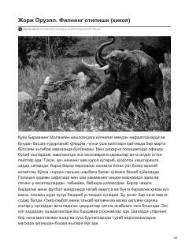

FOMustamlakachilik va inson ruhiyati ziddiyatlarini ochib beruvchi mashhur hikoya.
Ushbu asar muallifning Birmadagi politsiya xizmati davridagi real voqealarga asoslangan bo'lib, imperializmning jirkanch mohiyati va inson vijdoni azoblarini ochib beradi. Kutilmaganda mast bo'lib qochgan filni qidirish jarayoni va uning fojiali yakuni orqali mustamlakachilik tuzumining inson ruhiyatiga ta'siri ko'rsatiladi. Hikoya o'quvchini chuqur o'ylantiradigan faldasafiy va hayotiy xulosalarga boy.